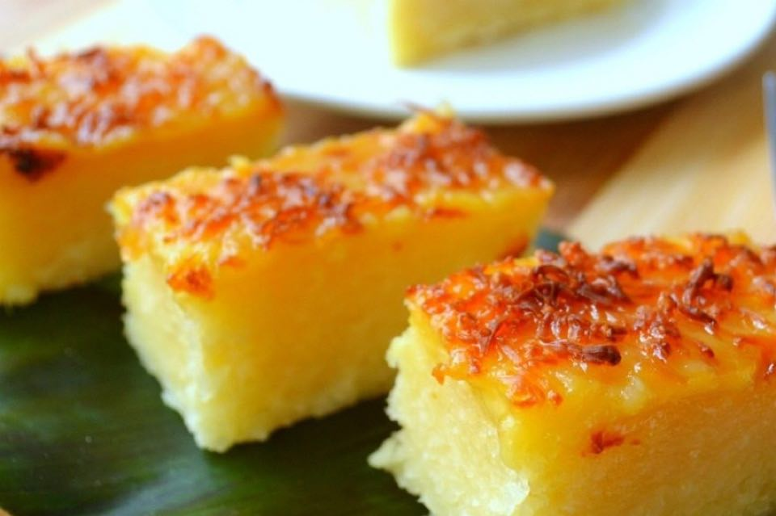

Cassava Cake

Description
A sweet cake that can be served warm or cold.
Ingredients
- 2 cups peeled yucca, grated
- 2 eggs, beaten
- 1 (12 ounce) can evaporated milk
- 1 (14 ounce) can sweetened condensed milk
- 1 (14 ounce) can coconut milk
Steps
- Preheat an oven to 350 degrees F (175 degrees C).
- Stir the yucca, eggs, evaporated milk, sweetened condensed milk, and coconut milk together in a bowl until thoroughly combined; pour into a baking dish.
- Bake in the preheated oven for 1 hour. Switch the oven's broiler on and bake under the broiler until the top of the cake is browned, 2 to 3 minutes. Cool completely in refrigerator before serving.